Core · Video walkthrough
Create certification types and verify another member’s record
Create a fictional Person type and record, verify another member, confirm saved holdings and type constraints, inspect unchanged policy, and compare filters with the actual HTML report.
Before you begin
- Use a fictional practice department and your existing certification view, management and setup permissions.
- Choose another fictional member for review; record holders cannot verify their own records.
- Use Reports permission for the separate HTML report. Leave existing role requirements and global policies unchanged.
Chapters
- Separate records, review and self-verification
- Inspect types and the template gallery
- Give the exercise its own type and code
- Save the verification rule and read back the type
- Start an administrative record for Casey
- Enter explicit identity and dates, then save
- Verify another member and confirm persistence
- Compare the person’s existing and new records
- Check counts and the locked scope
- Distinguish role enforcement from notifications
- Filter the dashboard and read the actual report
- Use a clear review process across sectors
Watch the walkthrough
Step 1
Separate records, review and self-verification
Certifications brings together the types your department tracks and the records held by people or units. In this fictional Chicago Fire department, the dashboard starts with one record pending verification. Boden can inspect his own pending record, but this page offers no Verify button. Record holders cannot verify their own records. We will create a clearly marked software exercise for another member, then use the normal administrative review path. Use the viewing, management, and setup permissions your department has assigned.

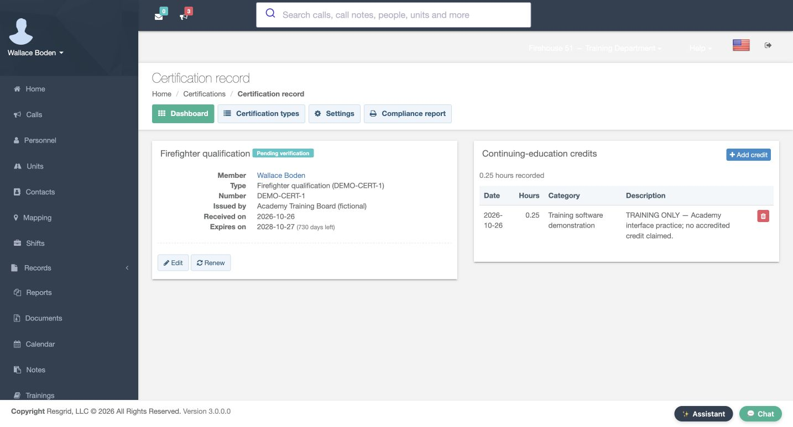
Practice
Identify the pending count, then compare the holder of a record with the signed-in reviewer.
Step 2
Inspect types and the template gallery
Choose Certification types. The table separates each stable code, category, scope, validity, record count, and requirement count. Template gallery opens a separate selection window. Enter SAR in its filter to inspect relevant starter entries. Their displayed names, authorities, and validity periods are catalog starting points that your department must review. Keep every checkbox clear and use Cancel; nothing is added. We will create our own fictional Person type so the software exercise is distinct from the existing types.
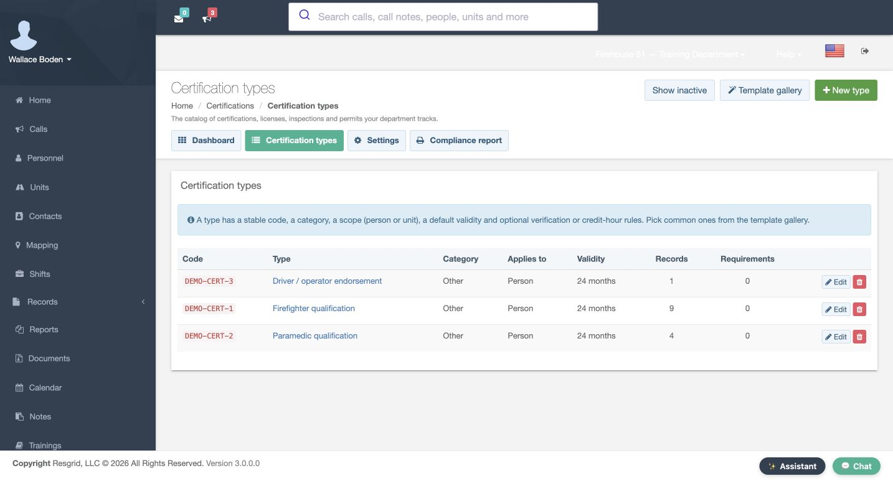
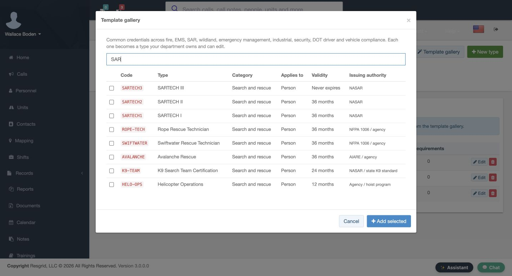
Practice
Filter the gallery without selecting or adding a template, then return to the catalog.
Step 3
Give the exercise its own type and code
Choose New type. Enter Training Only, Record Review, followed by the exercise date, as the Type. Give it the explicit code TRN-REVIEW-20261028. A stable, recognizable code helps distinguish this type later in tables and integrations. Keep Category as Other and Applies to as Person. Enter Academy Software Exercise, marked fictional, as the Issuing authority. The Description explicitly identifies a software verification exercise and says that it is not a professional qualification or authorization.
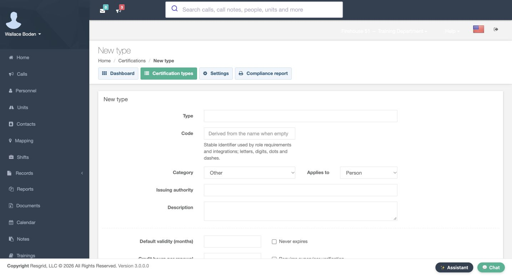
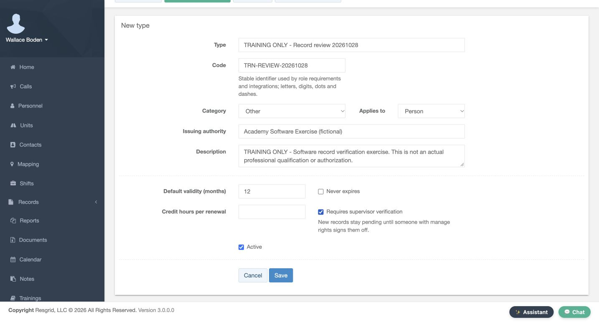
Practice
Prepare a unique fictional type name, code, issuer, and purpose before saving.
Step 4
Save the verification rule and read back the type
Set Default validity to twelve months and leave Never expires clear. Credit hours per renewal stays blank. Check Requires supervisor verification and keep Active checked. The help explains that new records remain pending until someone with management rights signs them off. Use Save, then read the returned catalog row. Our code is present, its scope is Person, and its validity is twelve months. Both Records and Requirements are zero: creating this type has not created a member record or attached a role requirement.
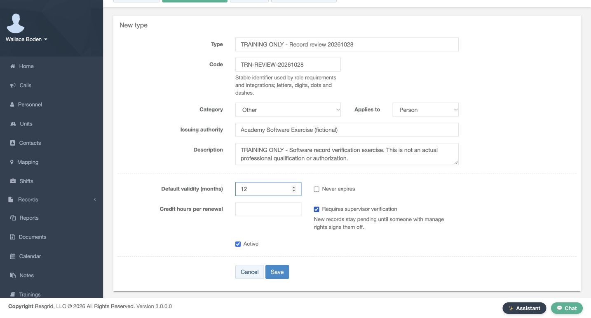
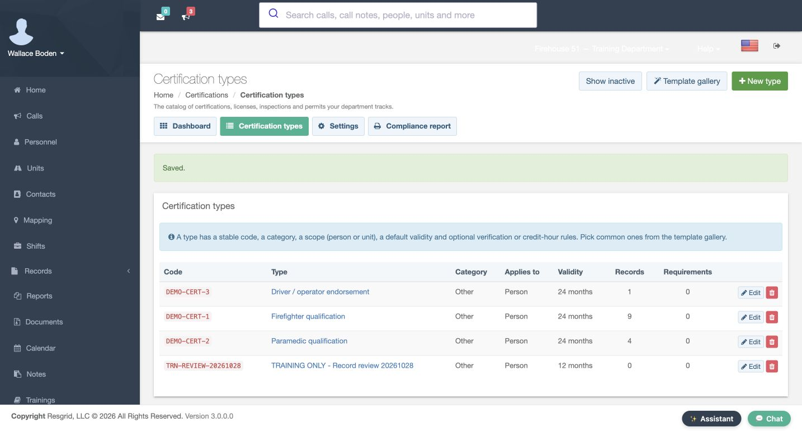
Practice
Save only your own exercise type and verify its code, twelve-month validity, and zero counts.
Step 5
Start an administrative record for Casey
On the dashboard, choose Add Certification. This administrative form has an explicit Member selector. Choose Matthew Casey, then select the new training type. Check the selected member and type together before entering identifying information. Notice that Issued on and Expires on are still blank after selecting the type. The type’s twelve-month setting has not filled these fields on this form. We will enter the intended exercise dates explicitly rather than assume that a date was calculated.
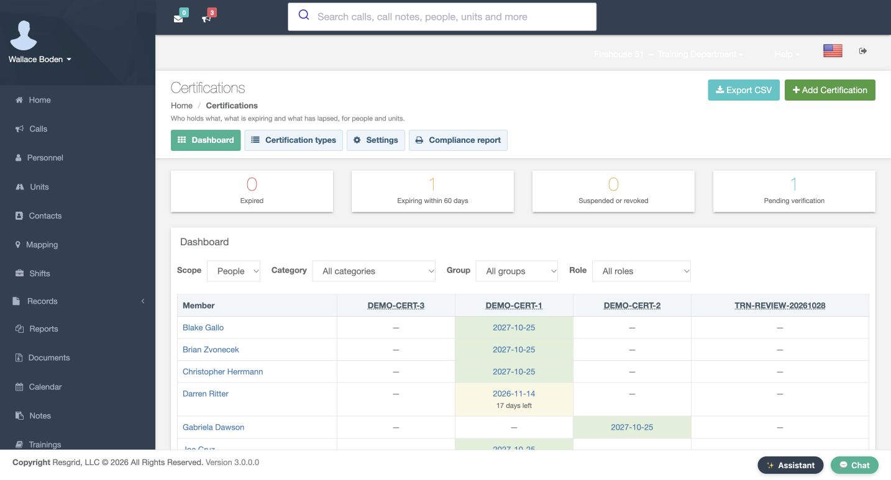
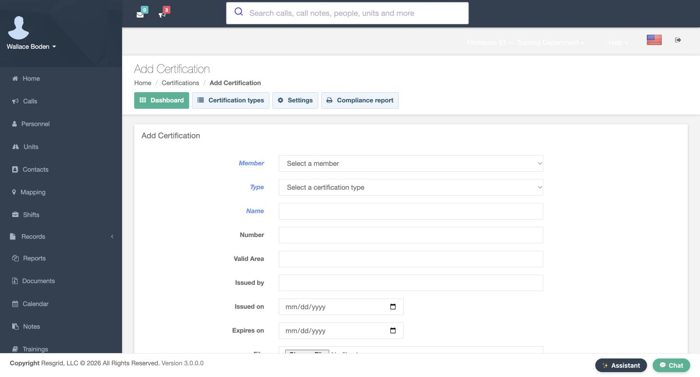
Practice
Select the intended fictional member and new type, then inspect both date fields.
Step 6
Enter explicit identity and dates, then save
Use Training Only, Software Record Review as the Name and the DEMO-CASEY-REVIEW number shown here. Valid Area says Academy training department only, and Issued by repeats our fictional software issuer. Enter October twenty-eighth, twenty twenty-six as the issue date and October twenty-eighth, twenty twenty-seven as the expiry. File is optional and remains empty. Save once. The returned dashboard reports Saved and now has two pending records. Saving the record did not automatically complete its required verification.
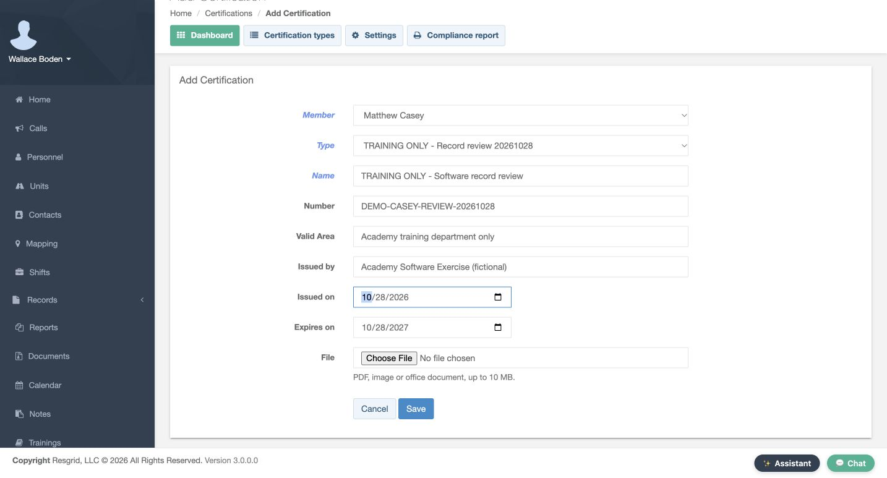
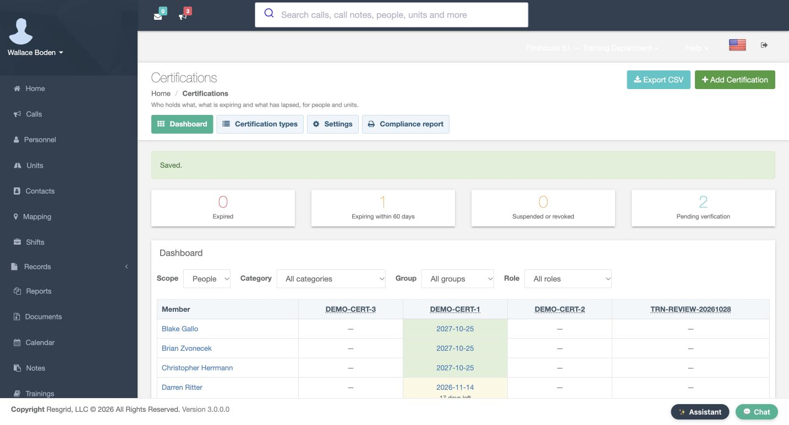
Practice
Save the explicit dates and exercise number, then check the returned pending count.
Step 7
Verify another member and confirm persistence
Here is Casey’s saved record. Read its member, type, number, and expiry before using Verify. This button submits the review directly. The returned record is Active and shows Verified by Wallace Boden with the displayed date. Open the record again and check that the same status and reviewer remain. This confirms the stored software review. It does not establish that a real qualification was earned. We leave renewal, credits, suspension, and revocation unchanged throughout this exercise.
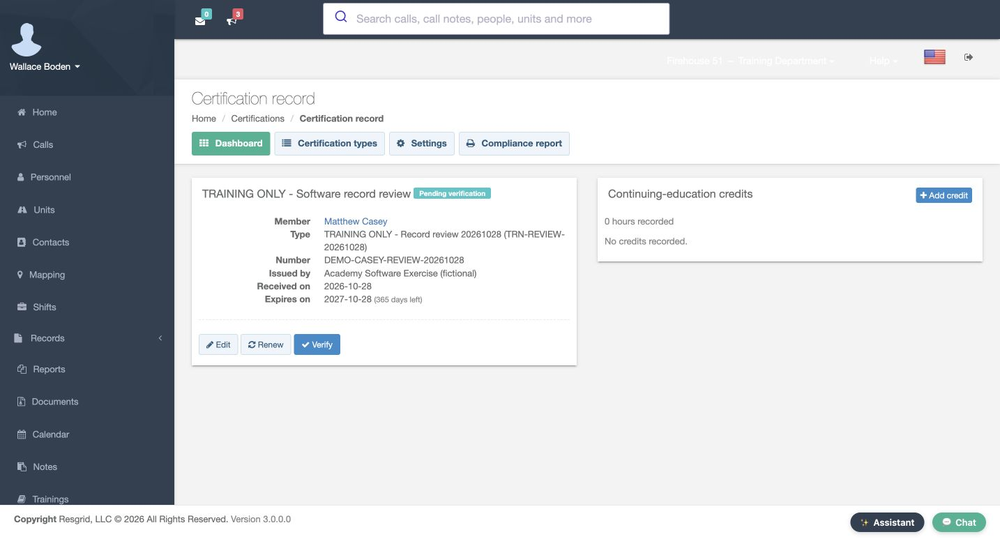
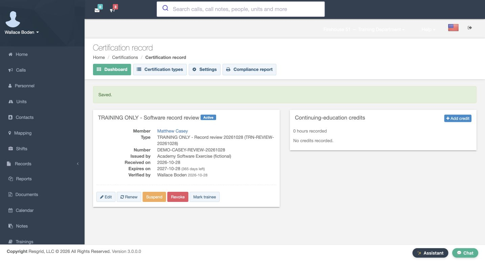
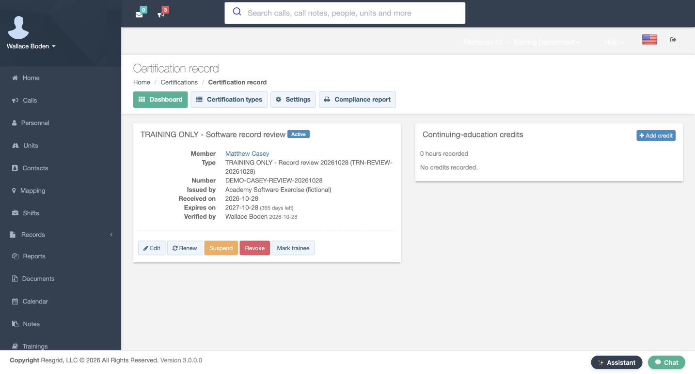
Practice
Review your own fictional record for another member, then confirm the stored reviewer and status.
Step 8
Compare the person’s existing and new records
Use Matthew Casey’s member link to open his holdings. The table lists each record separately with its name, type, expiry, and status. The existing Firefighter qualification remains, and the new training review appears on another row with its own date and Active status. Compare the exact record name and type before opening or editing anything. This person view helps you distinguish a newly added exercise record from an older record that should remain untouched.
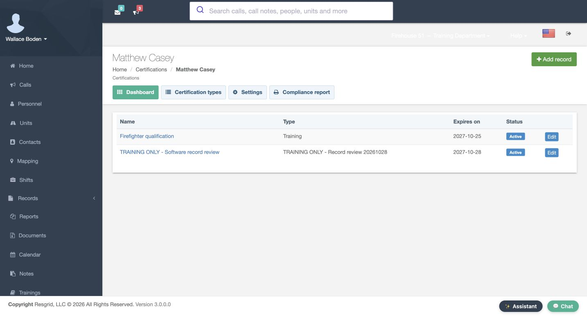
Practice
Find both rows and identify the new exercise without changing the original record.
Step 9
Check counts and the locked scope
Return through Certification types. Our row now has one Record and still has zero Requirements. Use that row’s Edit control to inspect the saved type. Applies to is disabled at Person because a record now references it. Code remains editable here; code locking applies when role requirements reference the type. The lower options still show twelve months, verification required, and Active checked. This is a readback only. We do not change the code, add a role requirement, or save another type update.
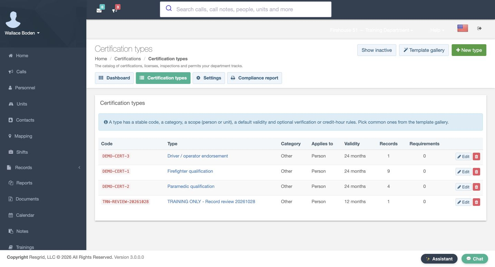
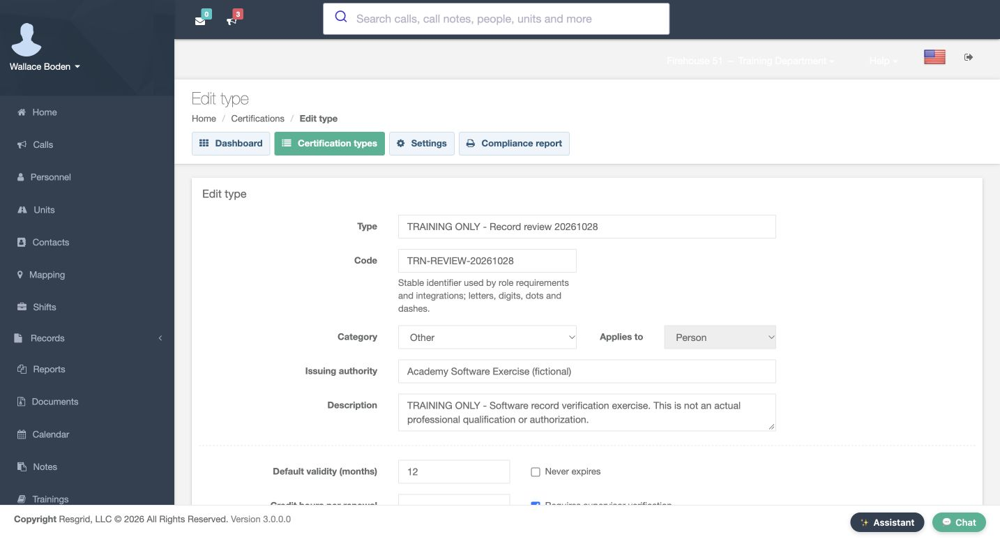
Practice
Read the one-record, zero-requirement counts and inspect the stored type without editing it.
Step 10
Distinguish role enforcement from notifications
Settings separates role enforcement from expiry notifications. The saved mode is Off, with thirty days of grace and pending records not treated as valid for role requirements. Warn only permits role changes with warnings; Enforce can block unqualified role additions and remove members after grace. We inspect these choices, restore Off, and leave Save untouched. Off does not disable expiry processing or notifications. The holder and administrator-digest options remain checked, with lead days of sixty, thirty, fourteen, seven, and one. These settings do not prove message delivery.
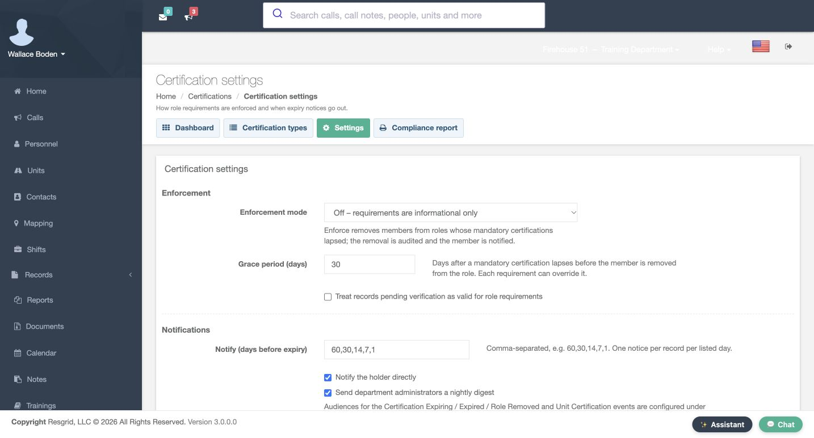
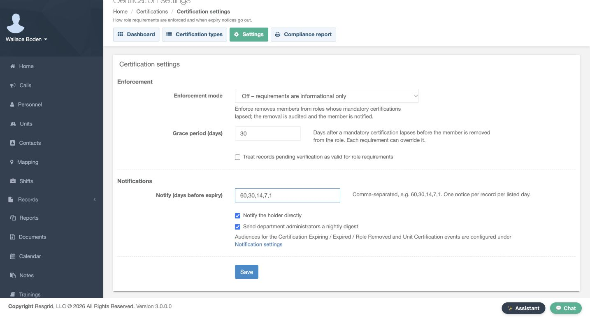
Practice
Read the current role and notification policies, leaving every saved setting unchanged.
Step 11
Filter the dashboard and read the actual report
On the dashboard, Group is filtered to Truck 81. Five member rows appear, including Casey’s new expiry under the training code. The Pending verification card still describes the department, not just these filtered rows. Export CSV is available for the current filters; no file is downloaded here. Choose Compliance report to open the HTML report. In Casey’s row, the training column shows the same expiry and Active status. Read that actual row rather than infer a status from a color or a total.
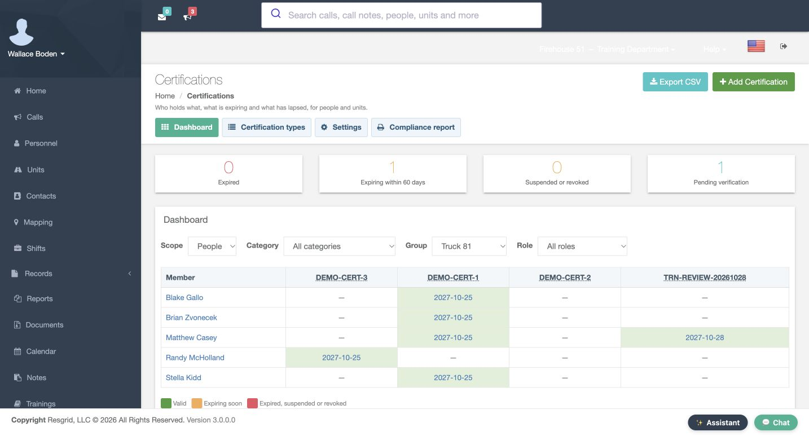
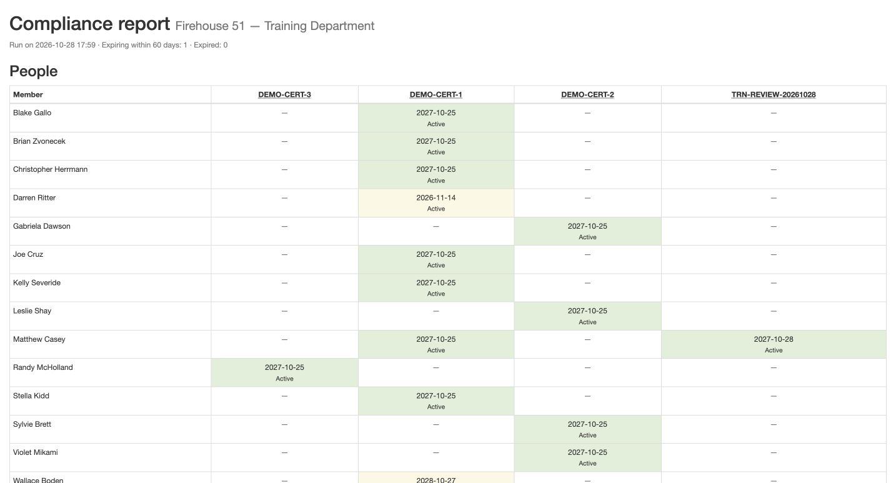
Practice
Compare Casey’s filtered expiry with the training column in the HTML report.
Step 12
Use a clear review process across sectors
Chicago Fire can use this pattern to organize a clearly identified exercise record. Community care and mental health teams can track operational training without patient detail. Search and rescue can distinguish person records from equipment records; security teams can organize reviewed staff records; wildland teams can keep seasonal training references current; and industrial response teams can separate staff records from unit inspections. In every setting, define the type, enter deliberate dates, use an authorized reviewer, and verify saved status. A software label alone does not authorize real duties.
Practice
Define one appropriate fictional type and identify who should review it in your team.
Examples for your department
- Fire / EMS
- Separate a fictional exercise record from existing department records and use a non-holder reviewer.
- Community response
- Track operational training references without patient detail or clinical-authority claims.
- Search and rescue
- Distinguish reviewed person records from equipment records; starter templates require department review.
- Security
- Organize staff training records and their stored review status without treating a software label as authorization.
- Wildland
- Keep seasonal training references and explicit dates current; do not infer readiness from a color alone.
- Industrial
- Keep staff records distinct from unit inspection records, using the appropriate scope and reviewer.
Transcript
Download transcriptRead the complete transcript
Create certification types and verify another member’s record Audience: department administrators, certification record reviewers Separate records, review and self-verification Certifications brings together the types your department tracks and the records held by people or units. In this fictional Chicago Fire department, the dashboard starts with one record pending verification. Boden can inspect his own pending record, but this page offers no Verify button. Record holders cannot verify their own records. We will create a clearly marked software exercise for another member, then use the normal administrative review path. Use the viewing, management, and setup permissions your department has assigned. Practice: Identify the pending count, then compare the holder of a record with the signed-in reviewer. Inspect types and the template gallery Choose Certification types. The table separates each stable code, category, scope, validity, record count, and requirement count. Template gallery opens a separate selection window. Enter SAR in its filter to inspect relevant starter entries. Their displayed names, authorities, and validity periods are catalog starting points that your department must review. Keep every checkbox clear and use Cancel; nothing is added. We will create our own fictional Person type so the software exercise is distinct from the existing types. Practice: Filter the gallery without selecting or adding a template, then return to the catalog. Give the exercise its own type and code Choose New type. Enter Training Only, Record Review, followed by the exercise date, as the Type. Give it the explicit code TRN-REVIEW-20261028. A stable, recognizable code helps distinguish this type later in tables and integrations. Keep Category as Other and Applies to as Person. Enter Academy Software Exercise, marked fictional, as the Issuing authority. The Description explicitly identifies a software verification exercise and says that it is not a professional qualification or authorization. Practice: Prepare a unique fictional type name, code, issuer, and purpose before saving. Save the verification rule and read back the type Set Default validity to twelve months and leave Never expires clear. Credit hours per renewal stays blank. Check Requires supervisor verification and keep Active checked. The help explains that new records remain pending until someone with management rights signs them off. Use Save, then read the returned catalog row. Our code is present, its scope is Person, and its validity is twelve months. Both Records and Requirements are zero: creating this type has not created a member record or attached a role requirement. Practice: Save only your own exercise type and verify its code, twelve-month validity, and zero counts. Start an administrative record for Casey On the dashboard, choose Add Certification. This administrative form has an explicit Member selector. Choose Matthew Casey, then select the new training type. Check the selected member and type together before entering identifying information. Notice that Issued on and Expires on are still blank after selecting the type. The type’s twelve-month setting has not filled these fields on this form. We will enter the intended exercise dates explicitly rather than assume that a date was calculated. Practice: Select the intended fictional member and new type, then inspect both date fields. Enter explicit identity and dates, then save Use Training Only, Software Record Review as the Name and the DEMO-CASEY-REVIEW number shown here. Valid Area says Academy training department only, and Issued by repeats our fictional software issuer. Enter October twenty-eighth, twenty twenty-six as the issue date and October twenty-eighth, twenty twenty-seven as the expiry. File is optional and remains empty. Save once. The returned dashboard reports Saved and now has two pending records. Saving the record did not automatically complete its required verification. Practice: Save the explicit dates and exercise number, then check the returned pending count. Verify another member and confirm persistence Here is Casey’s saved record. Read its member, type, number, and expiry before using Verify. This button submits the review directly. The returned record is Active and shows Verified by Wallace Boden with the displayed date. Open the record again and check that the same status and reviewer remain. This confirms the stored software review. It does not establish that a real qualification was earned. We leave renewal, credits, suspension, and revocation unchanged throughout this exercise. Practice: Review your own fictional record for another member, then confirm the stored reviewer and status. Compare the person’s existing and new records Use Matthew Casey’s member link to open his holdings. The table lists each record separately with its name, type, expiry, and status. The existing Firefighter qualification remains, and the new training review appears on another row with its own date and Active status. Compare the exact record name and type before opening or editing anything. This person view helps you distinguish a newly added exercise record from an older record that should remain untouched. Practice: Find both rows and identify the new exercise without changing the original record. Check counts and the locked scope Return through Certification types. Our row now has one Record and still has zero Requirements. Use that row’s Edit control to inspect the saved type. Applies to is disabled at Person because a record now references it. Code remains editable here; code locking applies when role requirements reference the type. The lower options still show twelve months, verification required, and Active checked. This is a readback only. We do not change the code, add a role requirement, or save another type update. Practice: Read the one-record, zero-requirement counts and inspect the stored type without editing it. Distinguish role enforcement from notifications Settings separates role enforcement from expiry notifications. The saved mode is Off, with thirty days of grace and pending records not treated as valid for role requirements. Warn only permits role changes with warnings; Enforce can block unqualified role additions and remove members after grace. We inspect these choices, restore Off, and leave Save untouched. Off does not disable expiry processing or notifications. The holder and administrator-digest options remain checked, with lead days of sixty, thirty, fourteen, seven, and one. These settings do not prove message delivery. Practice: Read the current role and notification policies, leaving every saved setting unchanged. Filter the dashboard and read the actual report On the dashboard, Group is filtered to Truck 81. Five member rows appear, including Casey’s new expiry under the training code. The Pending verification card still describes the department, not just these filtered rows. Export CSV is available for the current filters; no file is downloaded here. Choose Compliance report to open the HTML report. In Casey’s row, the training column shows the same expiry and Active status. Read that actual row rather than infer a status from a color or a total. Practice: Compare Casey’s filtered expiry with the training column in the HTML report. Use a clear review process across sectors Chicago Fire can use this pattern to organize a clearly identified exercise record. Community care and mental health teams can track operational training without patient detail. Search and rescue can distinguish person records from equipment records; security teams can organize reviewed staff records; wildland teams can keep seasonal training references current; and industrial response teams can separate staff records from unit inspections. In every setting, define the type, enter deliberate dates, use an authorized reviewer, and verify saved status. A software label alone does not authorize real duties. Practice: Define one appropriate fictional type and identify who should review it in your team. Examples for your department Fire / EMS: Separate a fictional exercise record from existing department records and use a non-holder reviewer. Community response: Track operational training references without patient detail or clinical-authority claims. Search and rescue: Distinguish reviewed person records from equipment records; starter templates require department review. Security: Organize staff training records and their stored review status without treating a software label as authorization. Wildland: Keep seasonal training references and explicit dates current; do not infer readiness from a color alone. Industrial: Keep staff records distinct from unit inspection records, using the appropriate scope and reviewer.